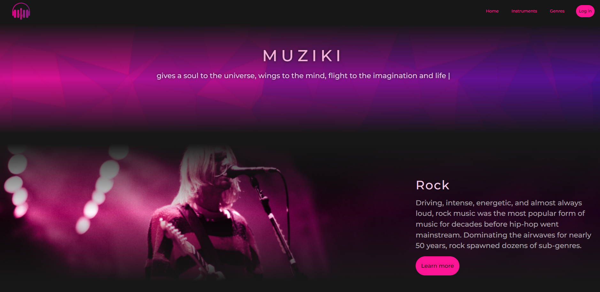

I will present my portfolio, showcasing the projects and experiences I have accumulated throughout my academic and professional journey. This prese ntation will highlight my skills, including software development, problem-solving, and teamwork, with practical examples from real-world projects, internships, and personal initiatives. Additionally, I will demonstrate how I applied various technologies and methodologies, providing insight into my ability to learn quickly and adapt to new challenges.
The Muziki Project is a music-focused platform that functions like a Wikipedia for music. It allows users to explore and contribute to a vast library of information about artists, albums, songs, genres, and musical history. The project emphasizes user collaboration, enabling individuals to add, edit, and curate detailed entries about both mainstream and niche music from around the world. With features such as artist biographies, discographies, lyrics, release dates, and genre classifications, Muziki aims to become a comprehensive and ever-growing knowledge base for music enthusiasts. It not only serves as a resource for discovering music but also fosters a community-driven space where fans and contributors can share their insights and deepen their appreciation for music.
The system provides caregivers and family members with live updates and notifications, ensuring timely intervention in case of irregularities or emergencies. It promotes a proactive approach to elder care by analyzing collected data to generate insights about comfort levels, sleep quality, and overall health trends. The platform integrates seamlessly with mobile apps, allowing easy access to reports and alerts, making it a reliable tool for improving both the safety and quality of life for elderly individuals.
A WooCommerce with Bidding Services and Admin Panel platform is an e-commerce solution that combines the traditional WooCommerce store functionalities with bidding and auction services. This type of system allows sellers to list products for auction, where buyers can place competitive bids within a set time frame. It creates a dynamic shopping experience, enhancing user engagement through live bidding and competitive pricing.